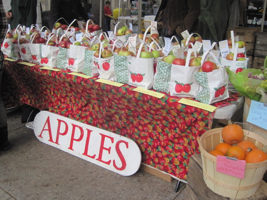

Home
How To Get There
Food
Activities
Check Out These Seasonal Food Treats For The Whole Family!
Apple Squash Soup
Apple squash soup is a delicious fall treat featuring seasonal butternut squash and apples for an even sweeter soup. You can find the apple squash soup on the commons. Ingredients include (for allergy purposes): butternut squash, apples, cumin, coriander, and ginger.
Apple Pizza
Apple pizza is a fun treat for the whole family. It's similar to actual pizza except it heavily features Ithaca's renowned seasonal apples! You can find apple pizza on the commons. Ingredients include: flour, butter, sugar, apples, cheese, bread crumbs
Home-Baked Apple Strudel
When you're craving dessert come find the apple strudel for a delicious taste of Ithaca apple dessert fare. Apple strudel is a warm apple dessert that the whole family will love. You can find apple strudel on the commons. Ingredients include: apples, sugar, butter, pecans, cinnamon, flour, lemon zest, caramel sauce

Fresh Apples By the Bag
There is nothing better than enjoying the delicious, locally grown apples at the Ithaca Apple Fest. All types of apples are available for sale and are deliciously in-season. Come grab a healthy and nutritious snack on the commons.

 Apple Squash Soup
Apple Squash Soup
 Apple Pizza
Apple Pizza
 Home-Baked Apple Strudel
Home-Baked Apple Strudel